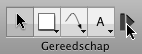
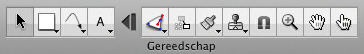

Tips voor het gereedschapspalet
Uitvouw-samenvouw-technologie


OmniGraffle 5 bevat geavanceerde uitvouw-samenvouw-technologie. Er is een knop, standaard na het tekstgereedschap, waarop u kunt klikken om het gereedschapspalet samen te vouwen, zodat alleen de onderdelen die het meest links staan nog zichtbaar zijn. Op die manier maakt u kostbare ruimte op de knoppenbalk vrij voor andere knoppen, maar kunt u het palet steeds uitvouwen om de rest van de gereedschappen zichtbaar te maken wanneer u ze echt nodig hebt.
U kunt de scheidslijn in de voorkeuren voor tekengereedschappen verplaatsen om te bepalen welke gereedschappen in de samengevouwen toestand van het palet zichtbaar moeten zijn, maar u kunt de uitvouwknop ook helemaal laten verdwijnen.
Blijvende activering van gereedschap
Standaard is het zo dat als u op een gereedschap klikt, dit voor eenmalig gebruik wordt geactiveerd. Vervolgens wordt het selectiegereedschap weer actief. Er verschijnt een klein donkerblauw symbool "1" op het gereedschap. 
Als u een gereedschap blijvend wilt activeren, klikt u hier nogmaals op. Het symbool verdwijnt en het gereedschap blijft actief totdat u een ander gereedschap selecteert.
U kunt dit gedrag wijzigen in de voorkeuren voor tekengereedschappen, zodat gereedschappen altijd (of nooit) blijvend zijn geactiveerd.
De infovensters van gereedschappen gebruiken
Normaliter gebruikt u de infovensters om een geselecteerd object op het canvas te wijzigen. Maar u kunt ze ook gebruiken om de stijl te wijzigen van objecten door een gereedschap gemaakt. Option-klik op het vormgereedschap, pengereedschap, lijngereedschap of tekstgereedschap (of klik er één keer op, al naar gelang de voorkeuren voor tekengereedschappen); de gereedschapsknop wordt gemarkeerd in uw markeringskleur om aan te geven dat u het infovenster voor het gereedschap gebruikt. 
Alle wijzigingen die u aanbrengt in het infovenster van het gereedschap, worden toegepast op het gereedschap zelf. Als u bijvoorbeeld de lijnkleur van het lijngereedschap rood maakt, krijgt elke lijn die u tekent rood als lijnkleur.
U kunt altijd Herstel standaardinstellingen in het venstermenu van het gereedschap selecteren om de oorspronkelijke instellingen te herstellen.
Stijlmenu's
Het vormgereedschap, pengereedschap, lijngereedschap en tekstgereedschap hebben een stijlmenu dat diverse stijlen bevat die u op het gereedschap zelf kunt toepassen. Om het stijlmenu te openen, klikt u op het driehoekje in de hoek van de knop of houdt u de knop ingedrukt. 
Boven in het menu wordt de stijl vermeld die u het laatst hebt ingesteld.
OmniGraffle Pro bevat een lijst met favoriete stijlen, waaraan u stijlen kunt toevoegen die u vaker wilt gebruiken. U kunt moeiteloos overschakelen tussen de huidige stijl boven in het menu en de stijlen in de lijst met favorieten. Kies Dupliceer stijl om een kopie van de geselecteerde stijl aan de lijst met favorieten toe te voegen. Kies Verwijder stijl om de geselecteerde stijl uit de lijst met favorieten te verwijderen. U kunt ook stijlen aan de lijst met favorieten toevoegen door de Control-toets ingedrukt te houden en tegelijkertijd op een object te klikken of door met de rechtermuisknop op een object te klikken en vervolgens Voeg toe aan Favorieten te selecteren, of door de Option-toets ingedrukt te houden en een object van het canvas naar de gereedschapsknop te slepen.
In de lijst Canvasstijlen worden de beschikbare stijlen voor dat canvas weergegeven. Als u een stijl kiest, wordt de huidige stijl vervangen door een kopie van die stijl.
In de lijst Figuurstijlen worden de beschikbare stijlen weergegeven voor het figuur dat u geopend hebt. Als u een stijl kiest, wordt de huidige stijl vervangen door een kopie van die stijl.
Om in de infovensters specifieke gegevens over het gereedschap zelf weer te geven, kiest u Toon stijlinfo. Op deze manier kunt u de stijl van het gereedschap aanpassen.
Om de basisinstellingen van het gereedschap te herstellen, kiest u Herstel standaardinstellingen.
Zwevend gereedschapspalet
Als u wilt, kunt u een gereedschapspaletvenster openen dat losstaat van het palet in de knoppenbalk; kies hiervoor Gereedschapspalet in het menu Venster. Sleep de hoek van het zwevende gereedschapspalet om de vorm ervan te wijzigen, en plaats het venster in de buurt van uw documentvenster om het daar magnetisch aan vast te maken.
Gereedschappen snel gebruiken
In plaats van te klikken, kunt u de gereedschappen ook activeren door op de cijfertoetsen te drukken. Elke cijfertoets van 1 tot 0 correspondeert van links naar rechts met een gereedschap in het palet.
U kunt ook sneltoetsen instellen in de voorkeuren voor tekengereedschappen.